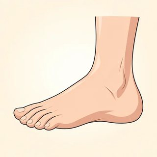

Doctor's Office & My Week Kit
Body and health flashcards, My Week picture prompts, doctor's-office role cards (patients, receptionists, doctor), new-identity week cards, the listening scripts you read aloud, a course-review Find-Someone-Who, and the teacher observation checklist that feeds the C24 final speaking assessment.
Every patient is a character with an invented name and invented symptoms. Learners never talk about their own health. The week cards let anyone talk about an invented week instead of their own. Offer them to the whole class, and never ask why someone chooses one.
Flashcards · The Body & the Doctor's Office





My Week · Picture Prompts
For literacy support in Task 2: learners lay picture cards on a 7-day strip (Mon–Sun) and talk from the pictures. Also great for the stretch "he / she" talk.


Task 1 · Doctor's Office Role Cards (one set per group of 3)
Sam Lee 🤧
You have a sore throat and a temperature. You feel tired. You work on Tuesdays.
Say: I have a sore throat. I feel tired.
Ana Silva 🤕
You have a headache. Your eyes hurt. You work at a computer every day.
Say: I have a headache. My eyes hurt.
Omar Haddad 🦶
Your back hurts and your feet hurt. You stand at work all day. You can't come in the morning.
Say: My back hurts. My feet hurt.
Mei Chen 😷
You have a cough and a cold. You don't have a temperature. You are free on Friday.
Say: I have a cough. I have a cold.
Luis García 🦷
Your tooth hurts. You can't eat. Tip: the doctor says You should see a dentist!
Say: My tooth hurts. I have a toothache.
Fatima Noor 🤢
You have a stomachache. You feel sick. Ask: How often should I take the medicine? and Can I go to work?
Say: My stomach hurts. I feel sick.
Riverside Health Center ☎️
Good morning, Riverside Health Center. How can I help you? · Offer a time. · What's your name? How do you spell it? · See you on … at …
Free: Mon 9:00 · Tue 10:30 · Wed 2:15 · Thu 4:45 · Fri 11:00
Riverside Health Center ☎️
Good morning, Riverside Health Center. How can I help you? · Offer a time. · What's your name? How do you spell it? · See you on … at …
Free: Mon 3:30 · Tue 8:15 · Wed 12:00 · Thu 9:45 · Fri 5:00
Dr. Patel 🩺
Come in and sit down. What's the matter? · Ask one question: How do you feel? Does your … hurt? · Give two pieces of advice. · I hope you feel better soon!
You should… / You shouldn't…
✅ rest · drink a lot of water · stay in bed · take this medicine · drink hot tea · see a dentist · wear glasses at the computer
❌ go to work · eat a lot · drink coffee · lift heavy things · stand all day
Task 2 · New-Identity Week Cards (anyone can use one)
Rosa, a cook 🍳
- 📆 usually gets up at 5:30 · works at a restaurant Tue–Sat
- 📆 often cooks for her family on Sundays · never works on Mondays
- ➡️ next week: going to visit her sister · going to buy new shoes · going to start a swimming class
Ahmed, a driver 🚌
- 📆 always takes the bus to work · drives a taxi Mon–Fri
- 📆 sometimes plays football on Saturdays · reads the news every evening
- ➡️ next week: going to see the doctor on Monday · going to meet a friend for coffee · going to relax on Sunday
Linh, a student 📚
- 📆 studies English on Tuesdays and Thursdays · usually goes to the library
- 📆 often goes to the park with her son · never gets up late
- ➡️ next week: going to take a test · going to cook a big dinner · going to go hiking
Jean, a new dad 👶
- 📆 works from home Mon–Wed · always takes the baby to the park in the morning
- 📆 sometimes plays the guitar in the evening · never sleeps a lot!
- ➡️ next week: going to start a new job · going to visit his parents · going to buy a stroller
Learners speak as the character ("I'm Rosa. I usually get up at 5:30…") or about them ("Rosa usually gets up…"). The second option is great stretch practice for the he / she -s.
Listening Scripts (teacher reads aloud)
Script 8.1 A · The appointment call (Workbook Ex 5)
Sam: Hello. I'd like to make an appointment, please.
Receptionist: Of course. What's the problem?
Sam: I have a sore throat and a temperature.
Receptionist: OK. Can you come on Tuesday at ten thirty?
Sam: Sorry, I work on Tuesday. What about Wednesday?
Receptionist: Wednesday… yes. Wednesday at two fifteen?
Sam: Yes, that's fine. Thank you.
Receptionist: What's your name, please? How do you spell it?
Sam: Sam Lee. S-A-M, L-E-E.
Receptionist: Thank you, Sam. See you on Wednesday at two fifteen.
Answer: Wednesday, 2:15. Ask: Why not Tuesday? (Sam works on Tuesday.)
Script 8.1 B · At the doctor (Workbook Ex 4)
Patient: Good morning, doctor. I don't feel well. I have a headache and a sore throat.
Doctor: I see. How do you feel today?
Patient: Not good. I have a temperature, too, and I feel tired.
Doctor: OK. Does your stomach hurt?
Patient: No, it doesn't. But my back hurts a little.
Doctor: It sounds like a cold. It's not serious. You should rest and drink a lot of water.
Patient: Should I take some medicine?
Doctor: Yes, you should take this for your temperature. And you shouldn't go to work for two days.
Patient: Thank you, doctor. I feel better already!
Gist: Is it serious? (No, it's a cold.) Detail: headache, sore throat, temperature, back hurts; not the stomach. Advice: rest, drink water, take medicine; don't go to work for two days.
Script 8.1 C · Model My Week talk (one hand = every week · two hands = next week)
Then ask: Which words tell you "every week"? (usually, often, never, on Tuesdays) Which tell you "next week"? (next week, on Monday + going to)
Script 8.1 D · Dictation: good advice (optional, or a C24 warm-up)
Warmer · Find Someone Who… (course review)
One copy per learner. Stand up, walk, and ask. Write a different name in each row. Make the question first! "Can you cook?" "Yes, I can." Recycles Modules 1–7. Personal but low-risk. Learners can always answer "No."
| Find someone who… | Question | Name |
|---|---|---|
| can cook rice | Can you…? | |
| usually gets up before 7:00 | Do you usually…? | |
| likes coffee | Do you like…? | |
| has a sister | Do you have…? | |
| is going to cook this weekend | Are you going to…? | |
| is wearing something blue | Are you wearing…? | |
| loves winter | Do you love…? | |
| takes the bus to class | Do you take…? | |
| has a birthday in the summer | When is your…? | |
| would like a tea right now | Would you like…? |
Literacy support: pair a lower-literacy learner with a partner who writes; they ask together. Stretch: ask one follow-up question each time ("What time?" "Where?").
Teacher Observation Checklist · C23 → C24
Observe during Task 1 (items 1–4) and Task 2 (items 5–8). Mark ✓ did it clearly · ~ did it with help, or errors that affect meaning · ○ not yet / not observed. You don't need a mark in every box. After class, use it to (1) pick each learner's C24 role-play card, (2) choose the two weakest items for the C24 warm-up, and (3) note who needs encouragement. This is not a grade.
- 1 Makes an appointment: day + time (on / at), spells name
- 2 Describes a problem: I have a… / My … hurts / I feel…
- 3 Understands and gives advice: should / shouldn't + verb
- 4 Uses repair: Sorry, can you say that again? / checks meaning
- 5 Normal week: present simple + frequency adverb
- 6 Next week: I'm going to + verb
- 7 Time words make the time frame clear
- 8 Asks / answers a follow-up question; speaks clearly enough to understand
| Learner | 1 | 2 | 3 | 4 | 5 | 6 | 7 | 8 | C24 card · notes |
|---|---|---|---|---|---|---|---|---|---|
Two items with the most ~ / ○: ______ and ______
Review plan (10 min): ______________________
Café (Module 7.2): ______________
Store (7.3): ______________ Doctor (8.1): ______________